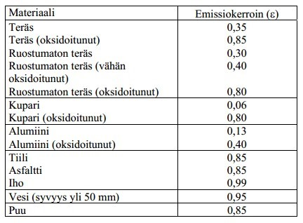
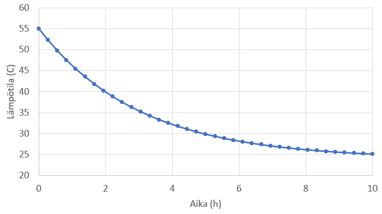

Lämpösäteily
Contents
Lämpösäteily#
Lämpösäteilyyn liittyvät laskukaavat poikkeavat paljon johtumisen ja konvektion laskukaavoista. Kaikki kappaleet lähettävät sähkömagneettista säteilyä riippumatta siitä, ovatko ne kylmiä vai kuumia, elollisia vai elottomia. Säteilyn määrä ja laatu riippuvat kappaleen lämpötilasta seuraavassa esitettävien laskulakien mukaisesti.
Mustan kappaleen säteily#
Musta kappale määritellään kappaleeksi, joka absorboi eli imee kaiken säteilyn, joka osuu siihen ympäristöstä. Mitään heijastua ei siis heijastu takaisin mustasta kappaleesta. Toisaalta musta kappale itsekin lähettää energiaa säteilynä.
Sähkömagneettisen säteilyn tärkeimpiin ominaisuuksiin kuuluu säteilyn aallonpituus, jota myös merkitään symbolilla \(\lambda\). Tietyt aallonpituudet (noin 380-700 nm) näkyvät ihmisille eri väreinä. Lyhempiaaltoinen säteily voi olla esimerkiksi ultraviolettisäteilyä. Pitempiaaltoinen säteily on esimerkiksi lämpöä tai radioaaltoja. Mitä lyhyempi on aallonpituus, sitä enemmän säteily sisältää energiaa. Tämän takia esimerkiksi ultraviolettiaallot ovat ihmiselle haitallisia, mutta radioaallot eivät ole.
Kaikki kappaleet lähettävät sähkömagneettista säteilyä. Säteily sisältää kaikkia aallonpituuksia, mutta aallonpituusjakauma riippuu kappaleen lämpötilasta.
Kylmät kappaleet lähettävät pääasiassa pitkäaaltoista säteilyä: mikro- ja infrapuna-aaltoja. Säteilyn kokonaisteho on pieni.
Kuumat kappaleet lähettävät myös lyhyempiaaltoista säteilyä: esimerkiksi kuuma rauta hehkuu punaisena. Säteilyn kokonaisteho on suuri.
Säteilyä voidaan kuvailla tarkemmin seuraavien luonnonlakien avulla:
Aallonpituus \(\lambda_{\text{max}}\), jolla säteilyä tulee eniten, on yhteydessä kappaleen lämpötilaan \(T\) seuraavasti:
\(\lambda_{\text{max}}=\frac{0.00289~\text{K m}}{T}\)
Laskukaava on nimeltään Wienin siirtymälaki. Sen avulla voidaan arvioida esimerkiksi kaukaisen tähden lämpötila, jos pystytään mittaamaan, millaista säteilyä tähti lähettää eniten.
Säteilyn kokonaisteho \(P\) saadaan laskukaavalla \(P=\sigma A T^4\), missä \(\sigma = 5.7\cdot 10^{-8}~\frac{\text{W}}{\text{m}^2 \text{K}^4}\) on luonnonvakio (Stefan-Boltzmann-vakio) ja \(A\) on säteilevän kappaleen pinta-ala. Laskukaavan nimi on Stefan-Boltzmannin laki.
Esimerkki
Aurinkon säteilyssä suurin osaa säteilystä on aallonpituudeltaan 502 nm. Mikä on tämän perusteella auringon pintalämpötila? Laske myös auringon lähettämä säteilyteho, kun tiedetään, että auringon säde on 696 000 kilometriä.
Ratkaisu
Käytetään Wienin siirtymälakia:
\(T=\frac{0.00289~\text{K m}}{\lambda_{\text{max}}}=\frac{0.00289~\text{K m}}{502\cdot 10^{-9}~\text{m}}=5757~\text{K}\)
Lämpötila Celcius-asteina on noin \((5757-273)^{\circ}~\text{C}\approx 5500^{\circ}~\text{C}\).
Säteilyteho saadaan Stefan-Boltzmannin laista. Pinta-ala pallolle, jonka säde on \(r\), on \(A=4\pi r^2\).
\(P=5.7\cdot 10^{-8}~\frac{\text{W}}{\text{m}^2 \text{K}^4} \cdot 4\pi\cdot(696 000 000\text{m})^2 \cdot (5757~\text{K})^4 \approx 3.8~\cdot 10^{26}~\text{W}\)
Emissiokerroin#
Muista kuin mustista kappaleista lähtevä säteilyteho on pienempi. Tällöin teho määritellään samalla tavalla kuin Stefan-Boltzmannin laissa, mutta kaavaan otetaan mukaan ns. emissiokerroin \(\epsilon\). Siis
\(P=\epsilon \sigma T^4 A\)
Emissiokerroin \(\epsilon\) riippuu materiaalista ja pinnan karheudesta. Se on pinnan lähettämän säteilytehon ja samassa lämpötilassa olevan mustan kappaleen säteilytehon suhde. Taulukossa on joidenkin aineiden emissiokertoimia. Tätä fysiikan lakia on käytetty hyödyksi esimerkiksi sellaisen teknologian kehittämisessä, jolla voidaan etsiä kadonnutta ihmistä pimeästä metsästä.

Kun lasketaan säteilystä johtuvaa lämpövirtaa kappaleesta ympäristöön, on kappaleen emittoimasta säteilystä \(\Phi_1\) vähennettävä kappaleen absorboima säteily \(\Phi_2\), joka lasketaan ympäristön lämpötilan perusteella. Merkitään kappaleen lämpötilaa \(T_1\) ja ympäristön lämpötilaa \(T_2\). Tällöin nettosäteilyteho on
\(\Phi=\Phi_1-\Phi_2=\epsilon \sigma T_1^4 A - \epsilon \sigma T_2^4 A = \epsilon \sigma A (T_1^4-T_2^4)\)
Jos lämpötilaero kappaleen ja ympäristön välillä on kohtuullisen pieni, voidaan nettosäteily laskea likimäärin kaavalla
\(\Phi=4 \epsilon \sigma T^3 A \Delta T\),
missä \(T\) on kappaleen lämpötila ja \(\Delta T\) on lämpötilaero kappaleen ja ympäristön välillä.
Esimerkki
Ihmiskasvojen lämpötila on 36.0 astetta ja pinta-ala 300 neliösenttimetriä eli 0.03 neliömetriä.
a) Laske kasvoista lähtevä kokonaissäteilyteho.
b) Millä aallonpituudella lähtevässä säteilyssä on suurin intensiteetti?
c) Kasvot myös absorboivat säteilyä ympäristöstä. Laske kasvoista lähtevä nettosäteilyteho, kun ympäristön lämpötila on -20 astetta.
Ratkaisu
a) \(\Phi_1=0.99\cdot 5.7\cdot 10^{-8}~\frac{\text{W}}{\text{m}^2 \text{K}^4} \cdot ((36+273.15)~\text{K})^4 \cdot 0.03~\text{m}^2 = 15.4~\text{W}\)
b) \(\lambda_{\text{max}}=\frac{0.00289~\text{K m}}{(36+273.15)~\text{K}} = 9.35\cdot 10^{-6}~\text{m}\) eli 9.35 mikrometriä
c) Tarkalla kaavalla
\(\Phi=0.99\cdot 5.7\cdot 10^{-8}~\frac{\text{W}}{\text{m}^2 \text{K}^4} \cdot 0.03~\text{m}^2 \cdot ((309.15~\text{K})^4-(253.15~\text{K})^4) = 8.5~\text{W}\)
Likiarvokaavalla
\(\Phi=4\dot 0.99\cdot 5.7\cdot 10^{-8}~\frac{\text{W}}{\text{m}^2 \text{K}^4} \cdot 0.03~\text{m}^2 \cdot (309.15~\text{K})^3 \cdot 56~\text{K} = 11.3~\text{W}\)
Säteily ja konvektio#
Lämpöpatterista tai takasta poistuu lämpöä säteilemällä, mutta myös konvektion kautta. Tällöin laskuun pitää yhdistää kumpaankin ilmiöön liittyvät laskukaavat.
Esimerkki
Laske nettolämpövirrat seuraaville kohteille:
a) Lämpöpatteri, jonka pinta-ala on 1.20 neliömetriä, emissiokerroin (maalattu metalli) 0.96 ja lämpötila 55 astetta (328 K). Ympäristön lämpötila on 21 astetta (294 K).
b) Nuotio, jossa lämpötila on 600 astetta (873 K) ja jonka pinta-ala on 0.10 neliömetriä. Nuotiota voi ajatella mustana kappaleena. Ympäristön lämpötila on 10 astetta (283 K).
Ratkaisu
a) Säteilystä seuraava nettolämpövirta on
\(\Phi_s=0.96\cdot 5.7\cdot 10^{-8}~\frac{\text{W}}{\text{m}^2 \text{K}^4} \cdot 1.20~\text{m}^2 \cdot ((328~\text{K})^4-(294~\text{K})^4) = 260~\text{W}\)
Konvektiossa tulee huomioida sisäilman pintavastus \(R=0.13~\frac{\text{K}\cdot\text{m}^2}{\text{W}}\).
Konvektion aiheuttama lämpövirta on \(\Phi=\frac{A \Delta T}{R}\) eli
\(\Phi_k=\frac{1.20~\text{m}^2 \cdot 34~\text{K}}{0.13 ~\frac{\text{K}\cdot\text{m}^2}{\text{W}}}=314~\text{W}\)
Yhteensä lämpövirta on \(\Phi=\Phi_s+\Phi_k=574~\text{W}\).
b) Säteilyn nettolämpövirta on
\(\Phi_s=5.7\cdot 10^{-8}~\frac{\text{W}}{\text{m}^2 \text{K}^4} \cdot 0.01~\text{m}^2 \cdot ((873~\text{K})^4-(283~\text{K})^4) = 3300~\text{W}\)
Konvektiossa tarvittava vakio on nyt ulkoilman pintavastus \(R=0.04~\frac{\text{K}\cdot\text{m}^2}{\text{W}}\) ja lämpövirraksi saadaan
\(\Phi_k=\frac{0.1~\text{m}^2 \cdot 590~\text{K}}{0.04 ~\frac{\text{K}\cdot\text{m}^2}{\text{W}}}=1475~\text{W}\)
Yhteensä lämpövirta on \(\Phi=\Phi_s+\Phi_k=4775~\text{W}\).
Kappaleiden jäähtyminen#
Kun kappaleesta poistuu lämpöenergiaa säteilemällä, niin kappaleen lämpötila laskee. Kappaleen jäähtyminen noudattaa jäähtymislakia
\(T=T_0+(T_1-T_0)e^{-\frac{t}{B}}\),
missä \(T\) on kappaleen lämpöhetkellä hetkellä \(t\), \(T_1\) on kappaleen lämpötila hetkellä \(t=0~\text{s}\), \(T_0\) on ympäristön lämpötila ja \(B\) on jäähtymisen nopeutta kuvaava vakio, nimeltään jäähtymisen aikavakio. Sen arvo lasketaan kaavalla
\(B=\frac{mc}{UA+4\epsilon\sigma AT_1^3}\),
missä \(m\) kappaleen massa, \(c\) on kappaleen ominaislämpökapasiteetti, \(U\) on ilmakerroksen U-arvo, \(A\) on kappaleen pinta-ala, \(\epsilon\) on kappaleen pinnan emissiokerroin ja \(\sigma= 5.7\cdot 10^{-8}~\frac{\text{W}}{\text{m}^2 \text{K}^4}\) on Stefan-Boltzmannin vakio.
Vakion \(B\) yksiköksi tulee sekunti, ja se kuvaa aikaa, jolloin kappaleen lämpötila on laskenut noin 37 prosenttiin alkuperäisestä. (Luku 37 % on peräisin laskutoimituksesta 1/e.)
Jäähtymislain perusteella kappaleen lämpötila lähestyy eksponentiaalisesti ympäristön lämpötilaa, mutta ei koskaan saavuta sitä. Todellisuudessa tietenkin ennemmin tai myöhemmin näin käy. Oheisessa kuvassa on esimerkki takan jäähtymisestä, kun aikavakio on 3 tuntia, alkulämpötila 55 astetta ja ympäristön lämpötila 24 astetta. Kaava ei toki ole aivan tarkka, sillä huoneen lämpötila nousee samalla kun takka jäähtyy.

Esimerkki
Takka on tehty vuolukivestä, ja sen massa on 1200 kg. Vuolukiven ominaislämpökapasiteetti on \(980~\text{J/(kg K)}\). Takan pinta-ala on 2 neliömetriä. Huoneen lämpötilan oletetaan pysyvän 21 asteessa, ja vuolukivipinnan emissiokertoimeksi arvioidaan 0.9. Mikä on takan pintalämpötila 10 tunnin kuluttua, kun se aluksi on aluksi 50 astetta?
Ratkaisu
Lasketaan aluksi jäähtymisen aikavakio \(B\). Laskemiseen tarvittava U-arvo on sisäseinän R-arvon käänteisluku: \(U=1/0.13~\frac{\text{W}}{\text{m}^2\cdot\text{K}} \approx 7.7 ~\frac{\text{W}}{\text{m}^2\cdot\text{K}}\). Alkulämpötila on muutettava Kelvineiksi, siis \(T_1 = (50+273)~\text{K}=323~\text{K}\). Sijoitetaan suureiden arvot aikavakion laskukaavaan:
\(B=\frac{1200~\text{kg}\cdot 980~\text{J/(kg K)}}{7.7~\frac{\text{W}}{\text{m}^2\cdot\text{K}} \cdot 2~\text{m}^2+4\cdot 0.9 \cdot 5.7\cdot 10^{-8}~\frac{\text{W}}{\text{m}^2 \text{K}^4} \cdot 2~\text{m}^2 \cdot (373~\text{K})^3} = 40233~\text{s}\)
Aikavakion arvo tarkoittaa, että lämpötila laskee noin 37 %:iin alkuperäisestä noin 11 tunnissa. Sijoitetaan aikavakio sekunteina jäähtymislakiin. Sijoitetaan myös ympäristön lämpötila Kelvineinä (\(T_0=(21+273)~\text{K}=294~\text{K}\) ja aika sekunteina (\(t=10\cdot 3600~\text{s}=36000~\text{s}\)).
\(T=294~\text{K}+(323-294)~\text{K}\cdot e^{-\frac{36000~\text{s}}{40233~\text{s}}} = 306~\text{K}\),
mikä vastaa Celsius-asteina 306-273=33 astetta.
Laskukaava toimii myös Celsius-asteilla, sillä kertoimena laskussa on lämpötilojen erotus. Lisäksi eksponentissa \(-t/B\) lasketaan ajan ja aikavakion suhde, joten silläkään ei ole merkitystä, onko ajat ilmoitettu sekunteina, minuutteina vai tunteina (tai vaikka päivinä tai vuosina):
\(T=21^{\circ}\text{C}+(50-21)^{\circ}\text{C}\cdot e^{-\frac{10~\text{h}}{11~\text{h}}} = 33^{\circ}\text{C}\).
Esimerkki
Termospullossa kuuma neste on alumiinisäiliössä, jonka ulkopuolella on 5 mm ilmaa. Ulkokuori on metallia. Alumiinikuoren tehtävänä on estää lämmön poistuminen säteilemällä.
Termospulloon kaadetaan 5 dl kiehuvaa vettä. Kuinka kauan kestää, kunnes vesi on 50-asteista? Ulkolämpötila on 15 astetta. Oletetaan, että alumiinisäiliö on sylinterinmuotoinen ja sen halkaisija on 5 cm ja korkeus 25 cm. Ilmakerroksen lämmönjohtavuus on \(0.024~(\text{W/(m K)})\).
Ratkaisu
Käytetään jäähtymislakia \(T=T_0+(T_1-T_0)e^{-\frac{t}{B}}\). Lasketaan ensin jäähtymisen aikavakio \(B\):
\(B=\frac{mc}{UA+4\epsilon\sigma AT_1^3}\)
Alumiinikuori estää lämpösäteilyn, joten emissiokerroin on \(\epsilon=0\). Aikavakion laskukaavaksi tulee siis
\(B=\frac{mc}{UA}\)
Sijoitetaan suureiden arvot:
Veden massa \(m = 0.5~\text{kg}\)
Veden ominaislämpökapasiteetti \(c = 4190~\text{J/(kg K)}\)
Termospullon pinta \(A=2\pi\cdot(0.025~\text{m}\cdot 0.25~\text{m}=0.0393~\text{m}^2\) (säde on puolet halkaisijasta eli \(r=2.5~\text{cm}\), pohjaympyrän kehä on \(2\pi\cdot r\), ja koko pinta-ala on pohjaympyrän kehän ja korkeuden tulo)
U-arvo on \(U = \frac{\lambda}{d} = \frac{0.024~(\text{W/(m K)})}{0.005~\text{m}} = 4.8~\frac{\text{W}}{\text{m}^2\cdot \text{K}}\)
\(B=\frac{0.5\cdot 4190}{4.8\cdot 0.0393}~\text{s}= 11106~\text{s}\)
Sijoitetaan tunnetut arvot jäähtymislakiin ja ratkaistaan aika \(t\).
\(50^{\circ}\text{C}=15^{\circ}\text{C}+(100-15)^{\circ}\text{C}\cdot e^{-\frac{t~\text{s}}{11106~\text{s}}}\)
\(85^{\circ}\text{C}\cdot e^{-\frac{t~\text{s}}{11106~\text{s}}}=(50-15)^{\circ}\text{C}\)
\(e^{-\frac{t}{11106~\text{s}}}=\frac{35^{\circ}\text{C}}{85^{\circ}\text{C}}\)
\(\frac{t}{11106~\text{s}}=-\text{ln}\frac{35^{\circ}\text{C}}{85^{\circ}\text{C}}\)
\(t=- 11106~\text{s}\cdot \text{ln}\frac{35}{85} = 9854~\text{s}\)
Aika on siis noin 2.7 tuntia. Termospullo vaikuttaa toimivan melko huonosti. Menikö laskussa jokin pieleen?
Jätimme huomiotta kolme konvektiokerrosta: alumiinisäiliöstä välissä olevaan ilmaan, ilmasta kuoren sisäpuolelle, ja kuoren ulkopuolelta ulkoilmaan. Oletetaan, että näissä kaikissa R-arvo on \(0.13~\frac{\text{K}\cdot\text{m}^2}{\text{W}}\). Ilman näitä konvektiokerroksia R-arvo on
\(\frac{d}{\lambda}=\frac{0.005~\text{m}}{0.024~(\text{W/(m K)})}=0.21~\frac{\text{K}\cdot\text{m}^2}{\text{W}}\)
eli yhteensä R-arvoksi tulee \(R=(3\cdot 0.13 + 0.21)~\frac{\text{K}\cdot\text{m}^2}{\text{W}}=0.60~\frac{\text{K}\cdot\text{m}^2}{\text{W}}\).
Tästä saadaan laskemalla U-arvo \(U=\frac{1}{0.60}~\frac{\text{W}}{\text{m}^2\cdot \text{K}}=1.67~\frac{\text{W}}{\text{m}^2\cdot \text{K}}~\) ja edelleen aikavakioksi
\(B=\frac{0.5\cdot 4190}{1.67\cdot 0.0393}~\text{s}= 31921~\text{s}\).
Jäähtymislaista ratkeaa nyt
\(t=-31921~\text{s} \cdot \text{ln}\frac{35}{85} = 28324~\text{s}\)
Nyt jäähtymisajaksi saatiin vajaa 8 tuntia, mikä vaikuttaa järkevältä tulokselta.